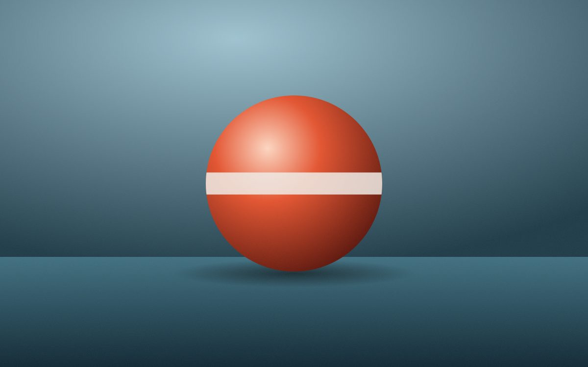
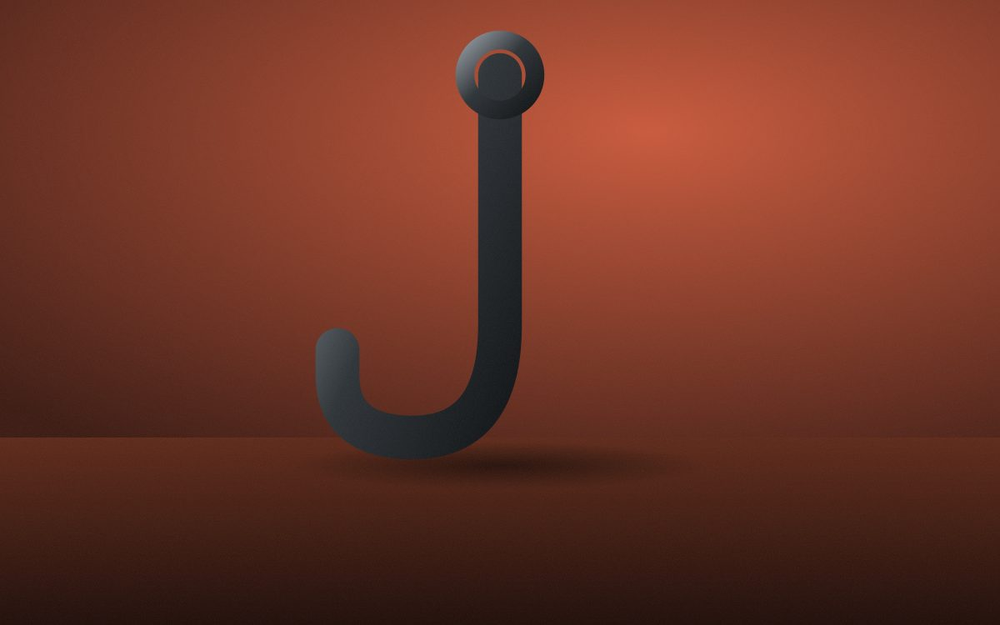

A season
in the sea.
Move the pointer, or drag on a phone



Ebb
Flood
Slack water
T
Steps
Buoy
Groyne
Harbour wall
I
Neoprene
Bobble hat
Flask
D
Dawn
Lengths
Tea on the wall
E
03 — Today's water
Read the board
before you go in.
- Water
- 11.4 °C
- High tide
- 07:42
- Flag
- Green — swim
- On the steps
- Lifeguard until 10:00
Sample values for a composition test. In a build these come from the club's own log or a live feed, never from the page.
04 — The seasonEvery morning,
all winter.
05 — Join
In before
eight.
Invented club · sample figures · a Fastidious composition test